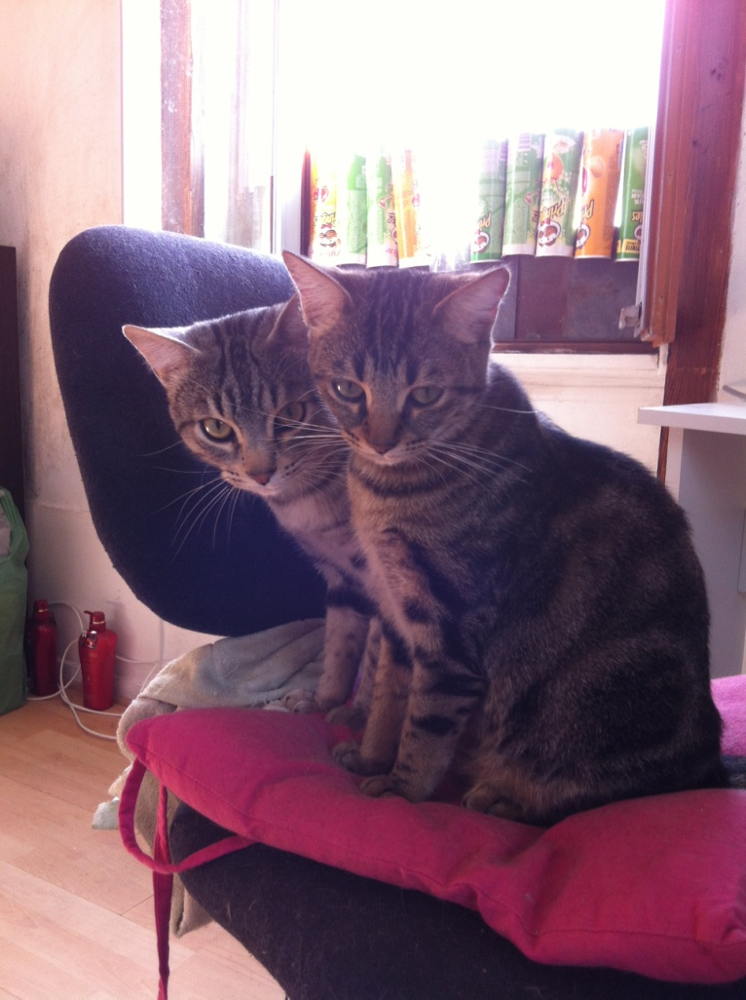
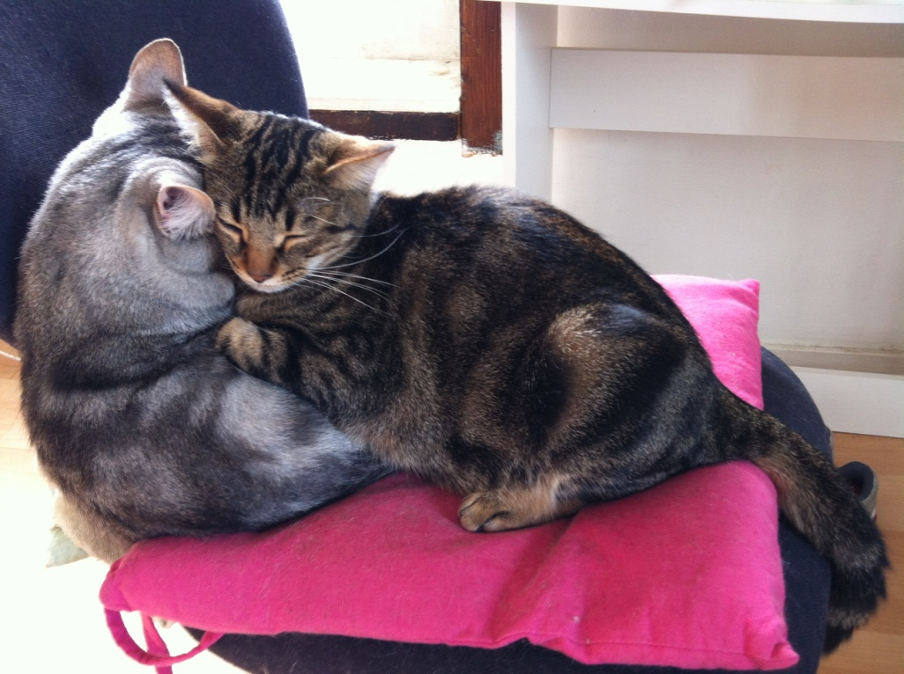
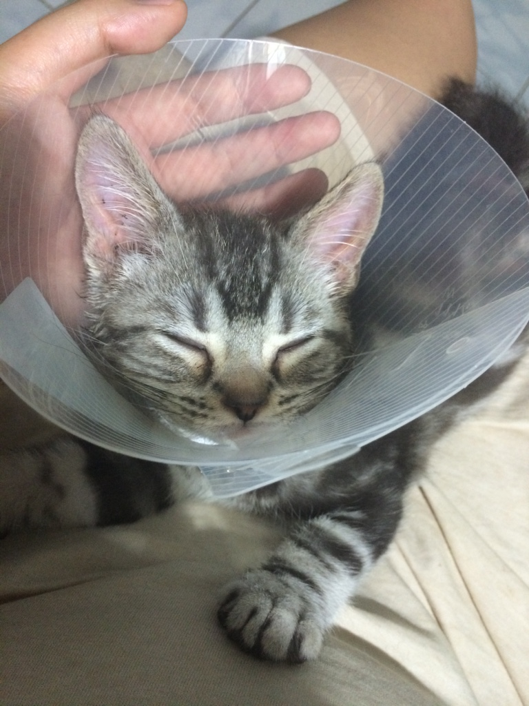

妞妞是一只在法国图卢兹被我收养的小母猫，当时收养了一对儿，妞妞和塞菲洛斯。收养它们的时候，两只相差一个月，只有小小的一团，毛色干枯，看起来要比实际年龄小上一个月，看着有些营养不良。那时候的它们，听到冰箱开门的声音，不管睡的多熟，都会瞬间跑到冰箱旁边，一脸祈求并喵喵叫着要吃的。每天它们的猫食碗里都备着满满的吃食，什么时候饿了，都可以去吃。渐渐的，它们意识到食物不会没有，也对冰箱不那么执着了。
它们跟着我来到了波尔多，在这里我和朋友租了一间50多平的一居室，它们终于可以在屋子里自由自在的追跑打闹。可是渐渐长大的两只，终于开始了闹猫。那时候没有给它们做手术，可是生小猫我又负担不起，时刻准备着分开热情似火的两只。可能是这个原因，在8月一个闷热的晚上，小公猫塞菲洛斯不堪忍受，离家出走了。留下了妞妞独守空闺
波尔多待了一年妞妞又随我去了巴黎，在这里生活了两年，给妞妞做了健康检查、打了疫苗、准备好文件，4岁大的妞妞就和我一起回到了北京。
妞妞刚回到北京，每天瑟瑟发抖，听到一点动静就会躲到我的床上，一头扎在被子里。大概过了一个月，妞妞适应了新的环境，开始在屋子里探险。老妈看着它独自一人挺孤单的，就买了一只小公猫：球球。买球球的时候，店家还很热心的主动降了价，当时特别开心，后来发现，果然没有免费的午餐。
球球回到家里，总是挠耳朵、甩头，也总是添肚子上的毛，我仔细看，耳朵里有黑色不明物质，肚皮上也发红、掉皮屑，果断带着它去了医院。经过兽医的检查，球球患有耳螨和皮炎，从此带上了“伊丽莎白罩”。
妞妞是个胆子小的，又没有容人的性子，据兽医说，这个年岁的母猫比较不能接受新伙伴。从球球来的第一天，妞妞就不停的用声音恐吓它，若是球球离得近了，还会打上两巴掌再遁走。
打打闹闹了两年多，两只的爱情竟然生生没有发展出来，每天就是球球追，妞妞跑，我的小猫生产大计看来要胎死腹中了T_T。